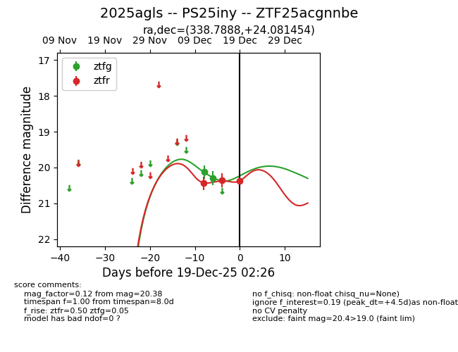
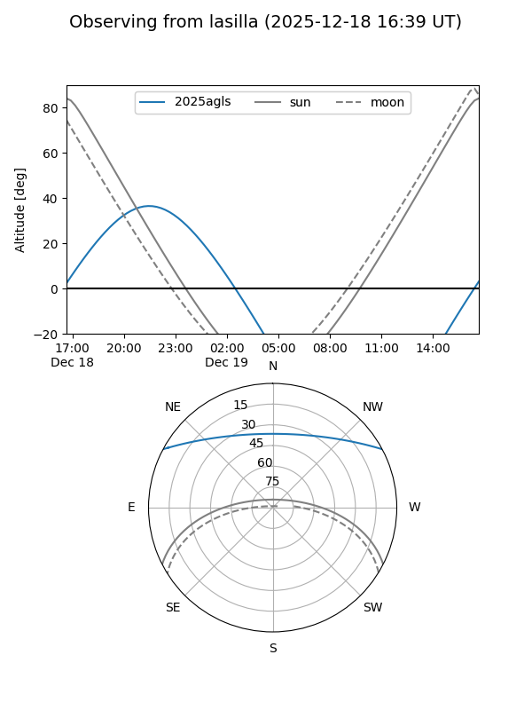
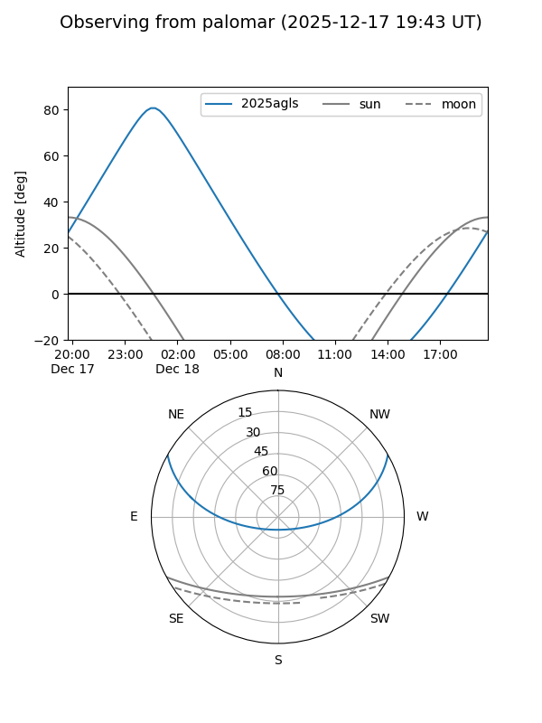

2025agls
Target 2025agls at 2025-12-18 11:18
Aliases and brokers:
FINK: fink-portal.org/ZTF25acgnnbe
Lasair: lasair-ztf.lsst.ac.uk/objects/ZTF25acgnnbe
ALeRCE: alerce.online/object/ZTF25acgnnbe
TNS: wis-tns.org/object/2025agls
YSE: ziggy.ucolick.org/yse/transient_detail/2025agls
alt names
ZTF25acgnnbe (ztf,fink_ztf)
2025agls (tns,yse)
PS25iny (panstarrs)
Coordinates:
equatorial (ra, dec) = 338.7888,+24.08145
equatorial (HMS+DMS) = 22:35:09.31,+24:04:53.23
galactic (l, b) = (87.0871,-29.14352)
Photometry
last ztfg=20.29, ztfr=20.36
2 ztfg, 2 ztfr detections
Lightcurve

Visibility


Additional plots